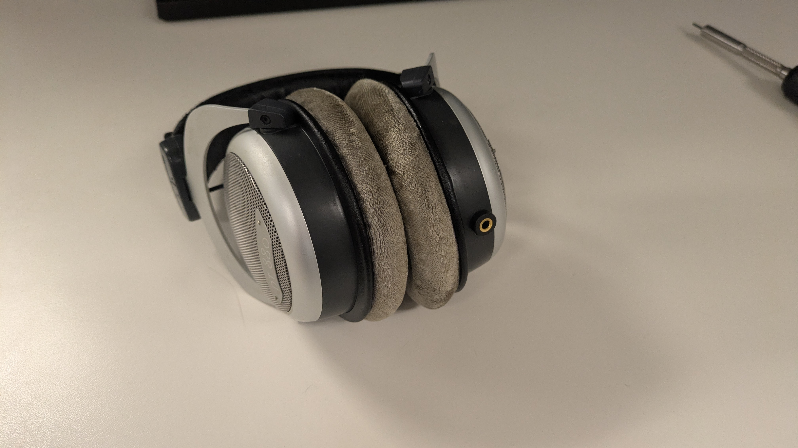

SmaugOfErebor.github.io
Beyerdynamic Headphone Repair
Quite a while ago, I bought a pair of Beyerdynamic DT 880 headphones. The only thing I didn't like about them at the time of purchase was that the aux cable was fixed. I knew that at some point, the cable would break and the headphones would become useless. Beyerdyanmic did sell headphones with an aux input jack instead of a fixed cable, but they were more expensive. They weren't a lot more expensive, but this was before I had a career and consequently, before I had much expendable income. I knew that the day would come where I would be faced with the decision to either throw them out or try to repair them.
Below was the indication that this day was approaching. The jacket around the wire split.
A few days later, the left driver began cutting in and out based on the position of my head. I cut my losses by cutting the wire.
I removed the ear cushion from the ear cup that the fixed cable was attached to.
A circular piece of plastic kept the driver in place in the ear cup and also kept a layer of foam between the wearer's ear and the driver. All were removed.
A small piece of metal kept the strain relief attached to the ear cup from the inside.
With this removed, I could pull the cable and strain relief from the ear cup.
The strain relief kept the cable from being pulled through the hole in the ear cup toward the driver. It had to be snipped from the cable.
I pulled the cable through the ear cup and stripped the jacket from the wires. The wires appeared to be made of many uninsulated strands, which didn't make any sense to me. If they were uninsulated, wouldn't the circuit get shorted and the headphones wouldn't work? More about this later.
Fortunately, someone online had posted the pinout, so I didn't have to do the work to figure out which wire did what. From left to right: left driver in | right driver in | right driver out | right driver ground | shared ground
The ear cup hole wasn't large enough to fit the new aux input jack. I made it large enough.
I mentioned before that the wires appeared to be uninsulated.
Indeed, that was only an appearance.
I learned that Litz wire is a type of wire made from many smaller strands, each individually insulated.
This type of wire might be used in headpones for two reasons as far as I can tell.
The first is that Litz wire is very flexible and more resistant to breaking from mechanical fatigue.
If you've ever been a young child allergic to paying attention during class as I once was, you've probably found yourself bending a paperclip over and over again until the bend got very hot and eventually broke.
That's the mechanical fatigue that this type of wire is more resistant to as compared to a single, solid strand of copper.
This is also the same mechanical fatigue that made the plastic jacket on the aux cable split as shown at the beginning of this story.
And it's the same mechanical fatigue that eventually damaged the Litz wire at the point of the jacket split which made the left driver start cutting in and out.
The second reason this type of wire might be used in headphones is to reduce the impact of an electical phenomenon called the "skin effect".
I won't pretend to understand it completely, but the skin effect is the tendency of an alternating electric current to distribute itself most densely at the surface (the skin) of the material conducting the current.
This results in increased resistance in alternating current waveforms, especially so the higher the frequency of the waveform.
Using many smaller strands increases the effective surface area for the current because each strand has its own skin.
Some audiophiles think this effect might affect audio quality, but I doubt I could ever notice that degradation, if it is detectable at all.
Litz wire can apparently be more difficult to solder because you have to make sure to burn off the insulation on the individual strands to ensure that there is good connectivity.
I replaced the Litz wire with solid wire to avoid this extra diffulty in soldering and because the wire will no longer be subject to mechanical fatigue.
This wire will remain stationary, soldered to the aux input jack inside the ear cup.
The aux cable I connect to the headphones later will still be subject to mechanical fatigue, but now I will just be able to replace it without more modifications to the headphones.

I don't have much experience in soldering and admittedly, could benefit from additional practice.
I soldered the other ends of the wires to the appropriate connectors on the aux input jack.
The aux input jack has a nut which screws on from the inside to keep it stationary, much like the piece of metal that kept the strain relief stationary previously.
The driver was put back in place in the ear cup. Fortunately, the aux input jack didn't physically prevent the driver from being put back in place.
The driver and protective foam layer were locked back in place with the circular plastic piece.
Finally, the ear cushion was placed back on the ear cup and my headphones are now better than the day I bought them. I've been listening to music while writing this page and, sorry audiophiles, I don't notice any audio quality degradation due to skin effect.
